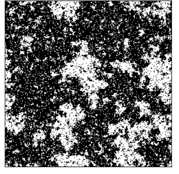
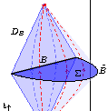

Matthew Beach
About Me
Condensed Matter Physics | Machine Learning | Quantum Information
I'm a researcher working on using machine learning to solve long-standing problems in quantum condensed matter physics.
In my spare time, I enjoy playing racquet sports, performing music, and rock climbing.
Projects
Here are a few projects that I've worked on recently,
-
Machine Learning Topological Defects
 It took over three decades for physicists to recognize that topological defects are responsible for the superfluid helium transition, but what if there was another way to detect these objects with machine learning?
It took over three decades for physicists to recognize that topological defects are responsible for the superfluid helium transition, but what if there was another way to detect these objects with machine learning?
-
Super-Resolving Ising Models
 Image super-resolution with neural networks applied to the Ising model. The paper connects concepts from the renormalization group and machine learning. -
QuCumber: quantum wavefunction reconstruction
Qucumber is an python library for performing quantum state tomography with neural networks, in particular, using restricted Boltzmann machine. -
Entanglement Entropy in Holographic States
 Calculating entanglement entropy in conformal field theories and gravity duals, with connections to kinetmatic de Sitter space.
Contact
Feel free to contact me